orDrumbox User Manual
Native version: the program (Windows ordrumbox.exe, also runs on macOS) and the CLAP / VST3 plugin — version 0.1.1
Contents
- Getting started
- The window
- Knobs, sliders and lists
- Menu bar
- Header (toolbar)
- Status line and action log
- Pattern grid
- Track editor
- Note editor
- Piano roll
- Song panel
- Synth editor
- Kit editor
- Master strip
- Generation, styles and auto mode
- Files: save, import, export, back up
- Keyboard shortcuts
- Audio signal flow
- The plugin (CLAP / VST3)
- AI clients (MCP)
- Updates, About, factory reset
1. Getting started
Installing
Download the release zip (ordrumbox-v<version>-windows-x64.zip, from the
download page or the GitHub releases) and unpack it.
It holds ordrumbox.exe and an assets folder; keep them side by side.
The assets folder holds the demo library, the kits and their samples, the scales, the
synth presets and the generation styles. No installer is needed. The plugin comes as
orDrumbox.clap and orDrumbox.vst3 (section 19).
First steps
- Start
ordrumbox.exe. The demo library opens on its first pattern. - Press Space (or click PLAY) to start and stop playback.
- Click a step of the grid to switch it on (a note); click it again to switch it off. Shift+click a note to select it: the note editor under the grid shows it.
- Click a track's name to select the track: the track editor on the right shows its settings.
- Pick a STYLE in the header, or press B, to make the pattern again in a style.
- Press F1 at any time for the list of keys.
Where your work is kept
Everything is saved automatically: the library a moment after each edit, and on quit. Ctrl+S (File › Save) saves at once. The right end of the menu bar tells where the library stands:
| Shown | Meaning |
|---|---|
| saved | Every edit is on disk. |
| modified | An edit is waiting: it is saved a moment after the last one. |
| new | A copy of the demo, written at the first edit. |
| save failed | The file could not be written; the status line says why. |
| not saved | There is no user data folder to save in. |
| in host project | The plugin: the host saves the library with its project. |
The files are in the user data folder:
| System | User data folder |
|---|---|
| Windows | %APPDATA%\orDrumbox |
| macOS | ~/Library/Application Support/orDrumbox |
| Linux / other | ~/.local/share/ordrumbox |
File › Change user data folder... moves it elsewhere (a cloud folder, a USB key); the choice is
noted in location.json in the default folder. Help › About gives the paths in use.
| File | Holds |
|---|---|
library.json | Patterns, arrangements (the song) and the synth presets edited. |
kits.json | The kits and their sample settings, as edited in the kit editor. |
samples/ | Audio of added, replaced, imported or normalized samples. |
settings.json | The master bus, the colour scheme, the zoom, the update check. |
songs/ | Songs saved with File › Save song (.odbox). |
exports/ | The first folder offered to exports. |
backups/ | Files moved aside by a factory reset or a restore. |
mcp.json | The port and token of the AI client link. |
synth_presets.json, written by earlier versions, is now only read: a library saved before has no
presets of its own and takes those. To start again from the demo, use Help › Factory reset...
(section 21), or File › Load the demo library... for the library alone.
2. The window
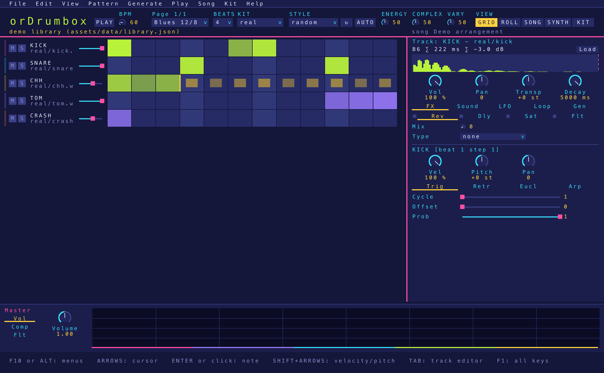
The window always keeps the same parts, whatever is being edited:
┌──────────────────────────────────────────────────────────────┐ │ Menu bar: File Edit View Pattern Generate Play Song Kit Help │ saved ├──────────────────────────────────────────────────────────────┤ │ Header: PLAY BPM PATTERN BEATS KIT STYLE ↻ AUTO knobs VIEW │ │ Status line: last action · undo / redo · song │ ├─────────────────────────────────────────────┬────────────────┤ │ Main editor (one of): │ Track editor │ │ grid · piano roll · song · synth │ (F2) │ │ (or the kit editor over them) │ │ ├─────────────────────────────────────────────┤ │ │ Note editor (F7, under the grid and roll) │ │ ├─────────────────────────────────────────────┴────────────────┤ │ Master strip: volume · spectrum · compressor · filters │ └──────────────────────────────────────────────────────────────┘
| Part | How to show it |
|---|---|
| Grid (pattern editor) | F5, View › Grid, header GRID |
| Piano roll | F4, View › Piano roll, header ROLL |
| Song panel | F3, View › Song, Song › Song view, header SONG |
| Synth editor | F6, View › Synth, header SYNTH |
| Kit editor (over the main editor) | Ctrl+K, View › Kit editor, Kit › Kit editor, header KIT |
| Track editor (right edge) | F2 or View › Track editor shows or folds it |
| Note editor (under the grid and the piano roll) | F7 or View › Note editor shows or folds it |
| Master strip (bottom) | View › Master shows or folds it |
F3, F4 and F6 toggle: pressed again, they go back to the grid. In the song panel, piano roll and synth editor, Esc also goes back to the grid. Nothing moves when a state changes (a sample replaced by a synth, a value that appears, playback that starts): an empty part keeps its place.
Zoom and window size
The window can be resized freely, down to 320×200. The zoom does not follow the window's size:
| Command | Shortcut | What it does |
|---|---|---|
| View › Zoom in / Zoom out | Ctrl++ / Ctrl+Shift+- (also the keypad's + - with Ctrl) | A quarter at a time: ×1, ×1.25, ×1.5… up to ×4. |
| View › Actual size | Ctrl+0 | Back to the display's scale (a display at 150 % shows at ×1.5). |
| View › Zoom: fit to window | The biggest of these scales at which the window shows the whole layout. |
A window too small for its zoom gets scrollbars: drag them, click beside the thumb, or turn the wheel where
nothing else takes it. The zoom is saved in settings.json.
Colours
A deep ground with neon accents, each one meaning one thing: pink for the app itself (the logo, panel titles, the selection); cyan for the keyboard focus; lime for what sounds (play, what is on, the playhead); yellow for what is chosen (the active tab and view, a solo, loop marks); violet for what varies by itself; orange for retriggers and euclidean hits; red for problems and mutes. Labels are grey and values plain white, with their knobs and sliders: a colour marks a state, never a number. Each track has its own softer colour (sky, peach, mint, lavender, gold, orchid, then round again), used for its stripe in the grid, its velocity bars, its notes in the piano roll and its clips in the song panel. C or View › Next colour scheme cycles through six schemes: Indigo, Amber, Deep sea, Crimson, Toxic, Graphite (a neutral grey, where the accents stand out most). The choice is saved.
3. Knobs, sliders and lists
All editors use the same controls.
| Action | Knob | Slider |
|---|---|---|
| Drag | Up / down (200 px for the whole range) | Click or drag along it |
| Shift + drag | Fine adjustment | |
| Mouse wheel, arrow keys, - = | One step (Shift or Alt: a tenth of a step; Ctrl: ten steps) | |
| Double-click | Restore the default value | |
| Right-click, or Enter when focused | Type a number | |
- Steppers (a count: steps per beat, loop length, retriggers, pulses…) show the number between − and +; the wheel, the arrows and a typed number work as on a knob.
- Lists open on a click (or Enter / Space): arrows to move, a letter to jump, the wheel to scroll, Enter to choose, Esc to close.
- Focus: Tab / Shift+Tab move the keyboard focus through the controls of the editors; Esc gives the keys back to the grid.
- Power buttons (named buttons, lit when on) switch an effect or an LFO on and off; LEDs (small lights) switch a mode.
- While playing, a setting moved by an LFO shows the LFO's current value.
- A value outside its range is brought inside it, and the control shows the value actually used.
Undo and confirmations
Every edit of the library is one undo step: Ctrl+Z undoes, Ctrl+Y (or Ctrl+Shift+Z) redoes, up to 50 steps. The Edit menu names the step it will undo or redo. This includes the synth presets, which are part of the library (a knob turned is one step). Kit edits and the master strip are saved directly and are not undo steps.
What can be undone is done at once — deleting a track, a clip, an arrangement, clearing notes, random notes, compacting tracks… — and its message on the status line ends with (Ctrl+Z: undo). What cannot be undone asks first, Enter goes on, Esc or a click cancels: removing a kit's sample or a synth preset, loading or importing a song or a library, loading the demo library, restoring user data, changing the user data folder, a factory reset, and an export that would replace a file.
4. Menu bar
The menu bar lists every command with its shortcut. Commands that cannot run are greyed out; on/off commands show a box (filled when on). Click a title, or press F10 or Alt alone, then use ← → between menus, ↑ ↓ between items, Enter to run, Esc to close. Commands ending in "..." ask for a name, a file or a folder. The save status (section 1) shows at the right end of the bar.
File
| Command | Shortcut | What it does |
|---|---|---|
| Save | Ctrl+S | Save the library now (it is also saved on its own after each edit). |
| Save song | Write the song (patterns, arrangements, selection) to songs/<name>.odbox in the user data folder. | |
| Save song as... | Write the song file to a folder you pick. | |
| Load song... | List the songs in songs/ and load one (replaces the library; confirmed). | |
| Export song... | Write the .odbox song file to a folder you pick. | |
| Import song... | Read a .odbox file (replaces the library; confirmed). | |
| Export library... | Write the whole library, synth presets included, to ordrumbox-library.json in a folder you pick. | |
| Import library... | Read such a file in place of the library (one undo step; confirmed). Its synth presets replace those of the same name. | |
| Load the demo library... | The assets' demo library in place of yours (one undo step; confirmed). | |
| Import MIDI file... | Ctrl+O | Turn a .mid file into new patterns (see Files). |
| Export pattern as JSON... | Ctrl+Shift+S | Write ordrumbox-<name>.json to a folder you pick. |
| Export pattern as MIDI... | Ctrl+M | Write the pattern as a type 1 MIDI file. |
| Export pattern as WAV... | Ctrl+E | Render the pattern once to a 16-bit 44.1 kHz WAV. |
| Export song as WAV... | Ctrl+Shift+E | Render the whole selected arrangement to WAV. |
| Add sample... | Add a WAV file to the current kit. | |
| Replace sample... | Replace the kit editor's selected sample with a WAV file. | |
| Load kit mapping... | Load a kit from a .json mapping. | |
| Export kit mapping... | Write the current kit's mapping as .json. | |
| Export kit with its samples... | Write a folder named after the kit: its mapping (kit.json) and its WAV files. | |
| Back up user data... | Copy all your files to a folder orDrumbox-backup-<date>-<time> (UTC). | |
| Restore user data... | Put such a backup back; the files there are moved to backups/ first (confirmed). | |
| Change user data folder... | Use another folder from now on; your files are copied there (confirmed). | |
| Use the default user data folder... | Back to the system's folder (confirmed). | |
| Open user data folder | Show it in the Explorer or the Finder. | |
| Quit | Ctrl+Q | Save and quit. |
Edit
| Command | Shortcut | What it does |
|---|---|---|
| Undo: <step> | Ctrl+Z | Undo the named step. |
| Redo: <step> | Ctrl+Y | Redo the named step. |
| Copy step | Ctrl+C | Copy the notes of the cursor step. |
| Copy track | Ctrl+Shift+C | Copy the focused track (settings and notes). |
| Paste | Ctrl+V | Paste the copied step at the cursor. |
| Paste track | Ctrl+Shift+V | Paste the copied track into the pattern. |
| Clear step | Delete | Remove the notes of the cursor step. |
| Accent on / off | L | Accent the notes of the cursor step (velocity 100 %), or take the accent off. |
| Deselect | Esc | Drop the selection and the cursor. |
View
| Command | Shortcut | What it does |
|---|---|---|
| Track editor | F2 | Show / fold the track editor on the right. |
| Note editor | F7 | Show / fold the note editor under the grid and the piano roll. |
| Master | Show / fold the master strip at the bottom. | |
| Grid | F5 | The pattern grid as main editor. |
| Piano roll | F4 | The piano roll as main editor. |
| Song | F3 | The song panel as main editor. |
| Synth | F6 | The synth editor as main editor. |
| Kit editor | Ctrl+K | Open / close the kit editor. |
| VU meters | V | Level meters on the track stripes of the grid. |
| Toasts | Show / hide the messages that pop up at the bottom of the window; they still go on the status line. | |
| Next colour scheme | C | Indigo → Amber → Deep sea → Crimson → Toxic → Graphite. |
| Zoom in, Zoom out, Actual size, Zoom: fit to window | Ctrl++, Ctrl+Shift+-, Ctrl+0 | See Zoom and window size. |
Pattern
| Command | Shortcut | What it does |
|---|---|---|
| New pattern | Ctrl+N | Add an empty pattern. |
| Duplicate pattern | Ctrl+D | Copy the current pattern. |
| Rename pattern... | Edit the pattern's name. | |
| Pattern description... | Edit the pattern's description. | |
| Previous / Next pattern | [ ] | Step through the library's patterns (also Page Up / Page Down). |
| Random pattern | F | Jump to a random pattern of the library. |
| Tempo -1 / +1 | - = | Change the tempo by 1 BPM (Shift: by 10). |
| Length -1 / +1 beat | Ctrl+- Ctrl+= | Pattern length, 1 to 16 beats. |
| Add track... | Add a track (up to 64): pick an instrument category, then the instrument that names the track (also + NEW TRACK under the rows and a track's right-click menu, whose Rename track offers the same menus plus Free name...). The categories stay shown beside the instruments: Left, Backspace or Esc goes back. | |
| Add KICK track | Ctrl+T | Add a track named KICK. |
| Remove track | Ctrl+Backspace | Remove the focused track. |
| Next grid | Ctrl+G | Next steps-per-beat value for the focused track. |
| Loop one step shorter | Ctrl+L | Shorten the focused track's loop by one step. |
| Compact tracks | Shorten every track whose notes repeat to its shortest loop (loop length set, the notes past it removed; what plays does not change). | |
| Clear pattern | Remove every note of the pattern, keeping its tracks. |
Generate
| Command | Shortcut | What it does |
|---|---|---|
| Generate the pattern again | B | Make the pattern again in its style (same as header ↻). |
| New pattern in the style | Shift+B | Add a new pattern made in the chosen style. |
| Auto (every track) | Every track in auto mode, or out of it (same as header AUTO). | |
| Drums (auto) | D | Generate the drum lines in auto mode; again: off. |
| Bass (auto) | S | Generate the bass line in auto mode; again: off. |
| Chords (auto) | Generate the chord lines in auto mode; again: off. | |
| Track in auto mode | Toggle auto mode of the focused track (also the Generate tab's Auto). | |
| Lock the track | Protect the focused track from the generation. | |
| Random notes on the track | X | Random notes on the focused track. |
Play
| Command | Shortcut | What it does |
|---|---|---|
| Play pattern | Space | Play / stop the current pattern in a loop. |
| Play song | Shift+Space | Play the selected arrangement from the song cursor. |
| Mute track | 1–9 | Mute track 1–9 (menu: the focused track). |
| Solo track | Shift+1–9 | Solo track 1–9. |
| Hear track | Q–P | Play the sound of track 1–10 once. |
Song
| Command | Shortcut | What it does |
|---|---|---|
| Song view | F3 | Show / hide the song panel. |
| Play song | Shift+Space | Play the selected arrangement. |
| New arrangement... | Add an arrangement. | |
| Remove arrangement | Remove the selected arrangement. | |
| Previous / Next arrangement | Shift+[ Shift+] | Select another arrangement. |
| Rename song... | Edit the song's name. | |
| Song description... | Edit the song's description. |
Kit
| Command | Shortcut | What it does |
|---|---|---|
| Previous / Next kit | , . | Select another kit. |
| Random kit | Shift+G | Select a random kit. |
| Auto-assign all tracks | Shift+J | Every track back on auto-assign (its sound found by its name, see the Sound tab). |
| Use synth kit | Shift+H | Every track on the synth preset matching its name (KICK → KICK_SYNTH, SNARE → SNARE_SYNTH…; random when none matches). |
| Random samples on all tracks | Shift+K | A random sample, from any kit, on every track. |
| Kit editor | Ctrl+K | Open / close the kit editor. |
| Normalize kit | Bring every sample of the kit to 0 dB peak. | |
| Import folder as kit... | Make a kit from a folder of WAV files (see Files). |
The letters that change every track (G, H, J, K) need Shift, so that a slip off the play keys changes nothing; pressed alone, they say so on the status line.
Help
| Command | Shortcut | What it does |
|---|---|---|
| Keyboard shortcuts | F1 | The list of every key. |
| About orDrumbox | The build and the paths in use (library, user data, exports, assets). | |
| User manual... | Open this manual on the web site. | |
| Check for updates | Ask now whether a newer release exists. | |
| Download orDrumbox <version>... | Open the page of the newer release (enabled when one was found). | |
| Factory reset... | Move your files aside and restart from the demo (confirmed). |
5. Header (toolbar)
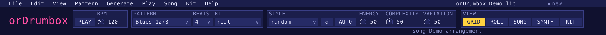
Under the menu bar, after the logo, a row of labelled groups:
| Group | Control | What it does |
|---|---|---|
| PLAY / STOP | Button | Start / stop the pattern (lit while playing). In the plugin, HOST shows the host's transport instead (section 19). |
| BPM | Knob, 20–300 | The session's tempo, which every pattern plays at; in the song panel, the selected song's. |
| MODE | PATTERN SONG (F5, F3) | What the window edits and what PLAY plays: one pattern in a loop, or the song, its patterns one after another. The mode shown is lit; the other button, or GRID, ROLL, SYNTH, switches to it. Not in the plugin: the host plays. |
| PATTERN | List | Pick a pattern. While playing, the pattern picked waits for the one playing to end its loop: the label reads NEXT until it starts. |
| BEATS | List, 1–16 | The pattern's length in beats. |
| KIT | List | The kit the tracks draw their samples from. |
| STYLE | List | The 14 styles, the learned styles, or random. Picking one makes the pattern again in it. |
| ↻ | Button (B) | Make the pattern again in its style: its tracks, meter and lines, and the session's tempo. A track the style names keeps its sound and settings; the others go. Draws a new seed. |
| AUTO | Button | Every track of the pattern in auto mode, or out of it. |
| ENERGY | Knob, 0–100 (50 = unchanged) | Scales the hits and densities of all lines, ×0.5 to ×1.5. |
| COMPLEXITY | Knob, 0–100 (50 = unchanged) | Shifts the complexity and syncopation of every drum part, −100 to +100. |
| VARIATION | Knob, 0–100 (50 = unchanged) | Scales the variation of the lines and of the play, from none to twice. |
| VIEW | GRID ROLL SYNTH KIT | The main editor shown (lit). KIT toggles the kit editor. |
The three knobs remake the lines at once from the pattern's seed: the same values always give the same lines.
6. Status line and action log
The line under the header shows the last action or message, what undo and redo would do, and the song position while a song plays. Errors (a file that cannot be read, a value that was refused) are shown there too; a problem found at start stays in a band of its own at the bottom of the window until you quit. A click on the status line opens the action log: everything done since the app started, newest first. Scroll it with the wheel, the arrows, Page Up/Page Down, Home/End.
7. Pattern grid
The grid (F5) shows the pattern's tracks as rows of steps, a page of beats across: 4 beats, or 8 or 16 when the window is wide enough for steps of a usable size. The page follows the playhead while playing and the cursor otherwise. Under the rows: the + NEW TRACK button, then the lane.
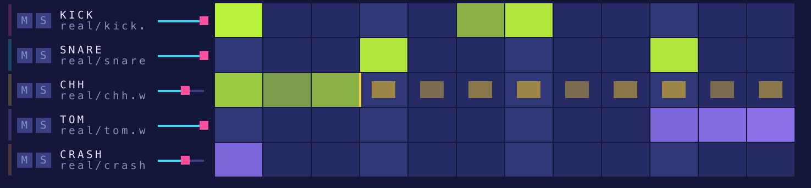
A track row
- Colour stripe — the track's colour; with V, a VU meter.
- M / S boxes — mute / solo.
- Name — the instrument (KICK, SNARE, CHH…), in violet when the track is in auto mode.
Under it, what it plays: its sample (
kit/file) or its synth preset (synth BASS_ACID). - Volume slider — the track's volume.
- Steps — notes in the track's colour, brighter with velocity; a mark at each beat, the loop point at the track's loop length.
The lane
Under the rows, the lane shows one setting of the track editor's track, a bar per note: VELOCITY, CHANCE (its probability), RETRIG (how many times it plays) PAN, LENGTH (how long it is held, in steps) or SHIFT (how early or late it plays, off the grid), picked by the tabs on its left. Click a bar to set its value at that height, or drag across the bars to draw them; a drag is one undo step.
Mouse
| Action | Result |
|---|---|
| Click an empty step | Switch it on: add a note. |
| Click a step with notes | Switch it off: remove all its notes (one undo step). |
| Shift+click a step | Select its note (and hear it); the note editor shows it. |
| Click a track's name | Select the track (and hear it); the track editor shows it. |
| Drag a track's name up or down | Move the track to another row (one undo step). |
| Hover a note | A bubble shows its pitch, MIDI number and the settings that differ from the defaults. |
| Hover a track's name | A bubble shows its states, its sound, its mix and length, and its generator settings away from the defaults. |
| Click M / S | Mute / solo the track. |
Right-click menus
| On | Items |
|---|---|
| A track's name, M or S | Rename track ›, Copy track, Paste track (after a copy), Move up, Move down, Duplicate track, Delete track, Randomize, Clear notes, Add track › |
| A step | Copy notes, Paste notes (after a copy), Delete notes (when there are notes), Add random note (a note at a random pitch) |
Keys
| Key | Action |
|---|---|
| Arrows | Move the grid cursor. |
| Enter | Like a click at the cursor: switch the step on or off. |
| Shift+↑ ↓ | Velocity of the selected note ±0.05. |
| Alt+← → ↑ ↓ | Nudge the selected note: one step in time, ±1 semitone of pitch. |
| Shift+arrows | Grow a zone from the cursor (Ctrl+click on a step takes it in; Ctrl+A selects the whole pattern). |
| L | Accent the cursor step's notes, or take the accent off. |
| Delete | Clear the cursor step. |
| Esc | Deselect. |
| Ctrl+C / Ctrl+V | Copy / paste the cursor step (Shift: the track). |
8. Track editor
Down the right edge (F2 shows or folds it). It edits the track of the cursor or of the selected note, and holds the track's settings only (the note's are in the note editor). Two cards: the sound card (the track's name, the sample bar, the knob bar), then five tabs: FX, Sound, LFO, Loop, Generate.
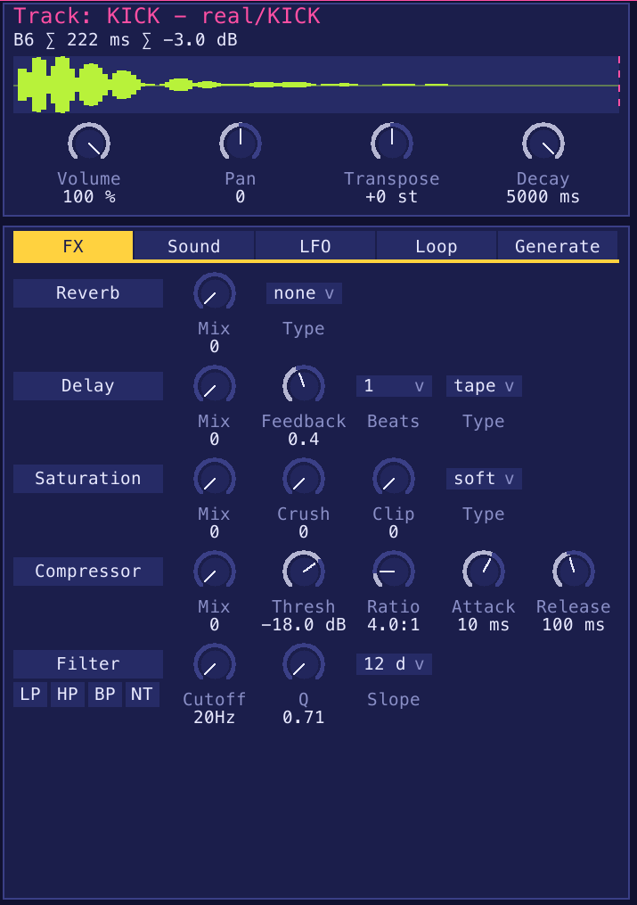
Sample bar
The sample's detected note, length and peak level, and its envelope with the decay end marked. A synth track keeps the place empty, so that nothing under it moves.
Knob bar
| Knob | Range | What it does |
|---|---|---|
| Volume | 0–100 % | Track volume (LFO-capable). |
| Pan | −1 to +1 | Stereo position (LFO-capable). |
| Transpose | −24 to +24 st | Transpose in semitones (LFO-capable). |
| Decay | 20–5000 ms (default 500) | The sample's decay: how long it sounds after the attack. |
FX tab
The five effects one under the other, each a strip: its power button (named) on the left, then its knobs and lists. Touching a control of an effect that is off switches it on.
| Effect | Control | Values | Notes |
|---|---|---|---|
| Reverb | Mix | 0–1 | Wet amount. |
| Type | none, room, hall, plate, spring, gated | hall and plate have a pre-delay, spring a dispersion, gated a large room cut 250 ms after the hit. | |
| Delay | Mix | 0–1 | Wet amount. |
| Feedback | 0–0.95 (default 0.4) | How many repeats. Greyed out for slap (one echo). | |
| Beats | 1/16, 1/8, 1/4, 1/2, 1, 2, 4 | Delay time in beats. Longer than 2 s at the tempo, it plays at the longest halving that fits (shown on the choice). | |
| Type | none, slap, tape, pingpong | slap: one clean echo; tape: darker repeats with wow; pingpong: starts left, then alternates. | |
| Saturation | Mix | 0–1 | Drive amount. |
| Crush | 0–1 | Bitcrusher: fewer bits and a lower sample rate as it rises. | |
| Clip | 0–1 | Hard clipper driven into a −3 dB ceiling: density, not level. | |
| Type | soft, hard, tape | soft: tanh; hard: clip; tape: asymmetric, even harmonics. | |
| Compressor | Mix | 0–1 | Switched on at 1: a plain compressor; lower, it is mixed in parallel with the dry sound. |
| Thresh | −60 to 0 dB (default −18) | Where compression starts. | |
| Ratio | 1–20 (default 4) | How hard it compresses. | |
| Attack | 0.1–200 ms (default 10) | How fast it reacts. | |
| Release | 10–2000 ms (default 100) | How fast it lets go. | |
| Filter | LP HP BP NT | lowpass, highpass, bandpass, notch | The type buttons under the power button. Off = bypass. Switched on from its 20 Hz default, the cutoff goes to 1 kHz. |
| Cutoff | 20 Hz – 20 kHz | LFO-capable. | |
| Q | 0.707–18.707 | Resonance (LFO-capable). | |
| Slope | 12 dB, 24 dB | Per octave. |
Sound tab
| Control | What it does |
|---|---|
| Mono | A new note cuts the previous one. |
| auto (LED) | Auto-assign: the track's sound follows its name and the selected kit. It takes the kit's sample of its instrument, else of a variant of it (its tom for a HI_TOM track), else the synth preset of its name (CLAP_SYNTH, BASS_FM…), else another kit's sample, else a substitute. Made again at play and on a kit change. |
| Instrument | The instrument (KICK, SNARE, CHH, BASS…). |
| Sample | A specific sample of the kits. File... loads a WAV file instead. |
| Synth | A synth preset instead of a sample (edit it in the synth editor). |
LFO tab
One LFO per setting, the five one under the other: Cutoff, Q, Volume, Pan, Transpose. Each strip's power button switches its LFO on or off.
| Control | Values | What it does |
|---|---|---|
| Wave | sine, triangle, sawtooth, square, random | The waveform. |
| Freq | 0.1–2 | The rate, in cycles per 4 beats. |
| Min, Max | the target's range | The span the LFO sweeps. |
| Phase | 0–1 | Start offset within the cycle. |
Loop tab
| Control | Range | What it does |
|---|---|---|
| Steps per Beat | 1–8 | The track's grid (Ctrl+G steps through it). Tracks may differ: 3 for triplets, 4 for sixteenths… |
| Loop Length | 1 step to the track's length | The track loops after this many steps (Ctrl+L: one shorter). Polyrhythms come from tracks of different lengths. |
| Swing | 0–1 | Delays the off-beat steps. |
Generate tab
How the generator treats this track (see section 15).
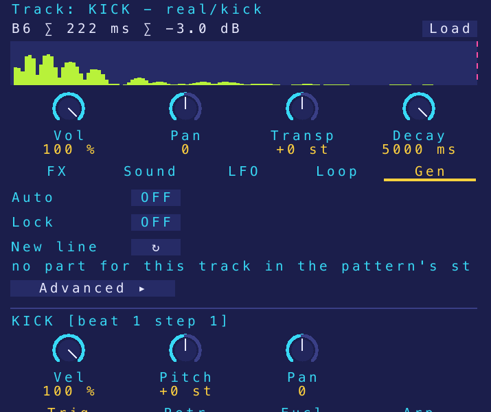
| Control | What it does |
|---|---|
| Auto | Auto mode: the track's line follows the song form as it plays. |
| Lock | ↻, the header knobs and auto mode leave the track as it is. |
| New line ↻ | Make a new line for this track alone. |
| style / part | The pattern's style and the part this track plays in it (* = a value taken from the style). |
| Measure Hits, Complexity, Variation | Drum track: how many hits per measure, how far from the strong steps, how much the line changes from loop to loop. |
| Variant, Density | Bass or chord track: the variant it plays (bass variants on a bass track, chord and melody ones on the others; empty = the style's) and its density (−1 to +1). |
A value ending in * is the style's; a double-click gives a value back to the style.
4→6 means the header knobs make it play 6.
Advanced ▸ unfolds more settings:
| Sub-tab | Shown | Settings |
|---|---|---|
| Manual | Auto mode off | Hit Variation (0–100), Note Variation (0–100), Probability (the track's note probability) |
| Groove | Auto mode on | Hit Variation, chances (0–100) of Pitch, Velocity, Silence, Fill, Ghost; Pitch Range (1–24); Scale Lock |
| Engine | Auto mode on | Note Variation, chances of Retrigger, Euclidean, Probability and its Depth, Arpeggio; Variant; Density |
| Compose | Drum track | Measure Hits (0–32), Complexity, Syncopation (0–100), Coupling (−100 to +100, toward or away from the coupled part), Variation, Style Weight (how much the style's weights count against the plain meter), Seed (0 = new each time; above 0 the same line every time) |
Hit Variation and Note Variation are variation budgets: 100 gives 16 units per pattern; a velocity or pitch change costs 1, a silence, fill or ghost 3. The chances say how those units are spent. The header's VARIATION knob scales them.
9. Note editor
A strip under the grid and under the piano roll, the views that edit notes (F7 shows or folds it). It shows the selected note (Shift+click in the grid, a click in the piano roll), else the step under the cursor, else the track's first note.
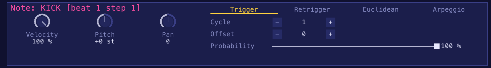
Knobs
| Knob | Range | What it does |
|---|---|---|
| Velocity | 0–100 % | How hard the note is hit. From 90 % it counts as an accent (L). |
| Pitch | −24 to +24 st | Semitones from the track's pitch. |
| Pan | −1 to +1 | The note's stereo position. |
| Length | 0.25–16 steps (default 1) | How long the note is held: a synth note before its release, the MIDI note sent or exported. A sample plays to its own end. The piano roll draws a note out further. |
Tabs
| Tab | Control | Range | What it does |
|---|---|---|---|
| Trigger | Cycle | 1–16 | Play once every N loops. |
| Offset | 0–15 | Which loop of the cycle plays. | |
| Probability | 0–100 % | Chance that the note plays. | |
| Retrigger | Retrigger | 1–16 | Number of hits (rolls, flams). |
| Rate | 1–16 | Spacing of the retriggers. | |
| Probability | 0–100 % | Chance of each extra hit (retriggers, euclidean fills, arpeggio notes). The first hit always plays. | |
| Fade | 0–100 % (default 60 %) | How far the repeats step down in velocity: at 100 % towards silence, at 0 all at the note's velocity. | |
| Euclidean | Pulses | 0–16 | Evenly spaced extra hits between this note and the next. |
| Rotation | 0–15 | Rotation of those pulses. | |
| Arpeggio | Scale | the scales of scales.json | The scale the arpeggio climbs. |
| Direction | up, down, updown, random | The direction. | |
| Range | 0–12 | Number of arpeggio notes (0 = off). | |
| Timing | Shift | −50–50 % of a step | The note off the grid: below 0 early, above late, with its retriggers. |
A cycled note plays when (loop + Offset) mod Cycle = 0. Arpeggio notes and euclidean fills do not fade.
10. Piano roll
F4. The track editor's track on a grid of steps (the list next to the title picks another track), 4 beats per page, pitches from MIDI 12 to 108 with a keyboard on the left. It opens on the track's pitch. The note editor stays under it.
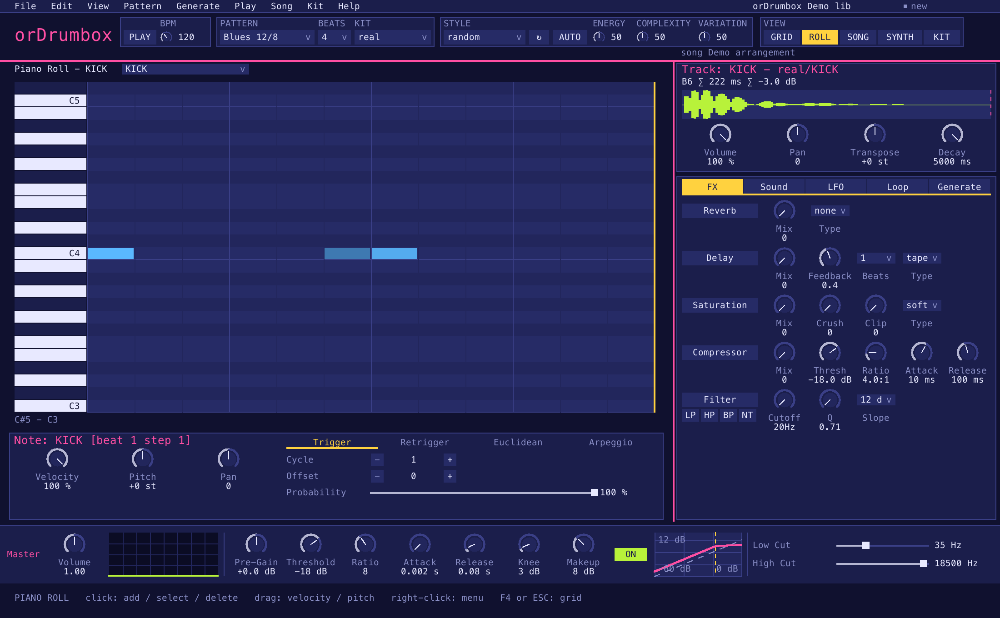
- Notes are drawn by velocity; a bar on top marks a probability (purple) or a cycle (blue).
- Retriggers, arpeggio steps and euclidean fills show as ghosts at their steps and pitches.
- While playing, the playhead moves (the page follows) and the sounding notes light up.
Mouse
| Action | Result |
|---|---|
| Click an empty cell | Add a note. |
| Click a note | Select it (and hear it). |
| Click the selected note | Delete it. |
| Drag a note | Up / down: velocity; sideways: pitch (a semitone every 12 px). The first movement chooses which; the value shows over the note; one undo step per drag. |
| Drag the right edge of a note | Its length, by quarters of a step, up to the end of the pattern; one undo step per drag. A note is drawn as wide as it is long, and moved by its shift. |
| Click a key | Hear that pitch. |
| Wheel | Scroll the pitches (Shift: the pages). |
| < > | Previous / next page. |
Right-click menus
| On | Items |
|---|---|
| A key | Clear all; Add sequence — the track replaced by a chord progression from that key, one chord per measure, a different progression each time (I-V-vi-IV, I-vi-IV-V…) |
| A cell | Add note or Delete note, Add minor/major chord and other common chords (diminished, 7ths, suspended…) |
Keys
| Key | Action |
|---|---|
| Arrows | Move the cursor (wrapping); the note there is selected. |
| Shift+↑ ↓ | Velocity of the selected note. |
| Shift+← → | Pitch of the selected note. |
| Enter | Add, select or delete at the cursor. |
| Delete | Delete the selected note. |
| Esc | Clear the selection, then back to the grid. |
11. Song panel
F3. A song is the library: its patterns and one or more arrangements. An arrangement places patterns as clips on a timeline of measures. The song panel is the app's only: the plugin plays patterns.
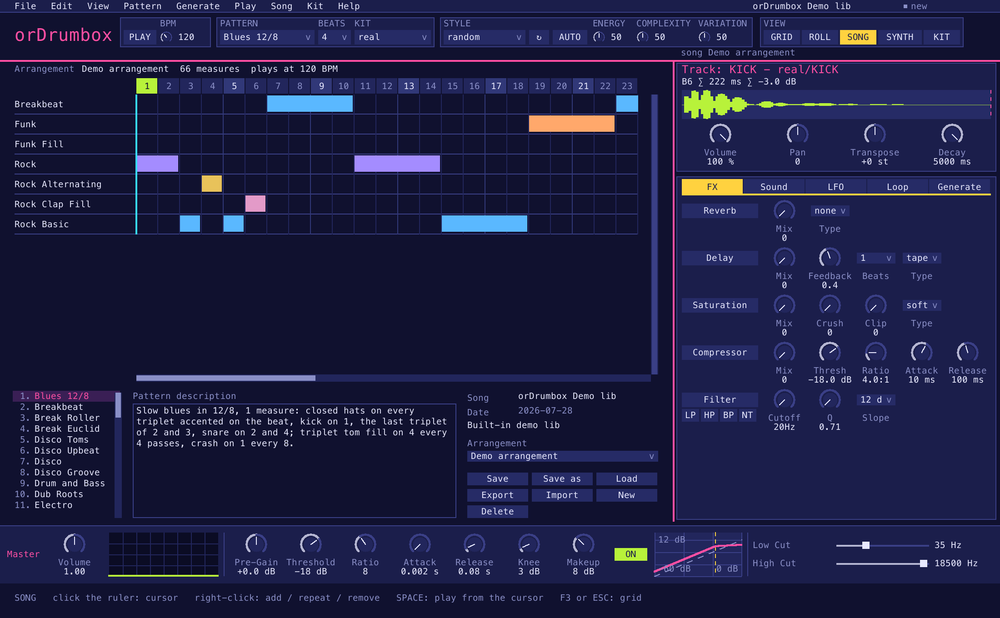
Layout
- Arrangement grid (top, full width): a ruler of measures; one row per pattern used, named on the left (a pattern gone from the library keeps its row, in red); each clip a bar over its measures, in the pattern's colour.
- Pattern list (bottom left): the library's patterns, and the selected pattern's description (click to edit).
- Song info (bottom right): the song's name and description (click to edit), its date, the arrangement list, and the buttons Save, Save as, Load, Export, Import, New, Delete.
Buttons
| Button | What it does |
|---|---|
| Save | Write songs/<name>.odbox in the user data folder. |
| Save as | Write the song file to a folder you pick. |
| Load | List the saved songs and load one (replaces the library; confirmed). |
| Export | Write the song file to a folder you pick. |
| Import | Read a .odbox file (replaces the library; confirmed). |
| New | Add an arrangement. |
| Delete | Remove the selected arrangement. |
Mouse
| Action | Result |
|---|---|
| Click the ruler | Set the song cursor (where the song plays from). While playing, playback jumps there. |
| Click a pattern of the list | Select it. |
| Double-click a pattern | Add it at the playhead (stopped: at the cursor). |
| Drag a pattern along the list | Move it in the list. |
| Drag a pattern onto the arrangement | Add it at that measure, on its own row (a tooltip shows the measure). |
| Drag a clip sideways | Move it, whole measures at a time (the wheel scrolls during the drag; there is a page past the end to drop on). |
| Drag a row by its name | Move the row up or down (its pattern moves in the list too). |
| Wheel | Scroll the list, the description, or the measures (Shift: the rows). The scroll bars can be clicked or dragged. |
Right-click menus
| On | Items |
|---|---|
| A pattern of the list | Add at measure n (the playhead or cursor), Move up, Move down, Rename, Delete (with its clips) |
| A row's name | Add at measure n, Move up, Move down, Delete row |
| A clip | Next (the same clip right after it), Delete |
| An empty cell | Add here (the row's pattern at that measure) |
Keys
| Key | Action |
|---|---|
| Space | Play / stop the song from the cursor. |
| ← → | Cursor one measure back / on. |
| ↑ ↓ | Previous / next pattern of the list. |
| Esc | Back to the grid. |
While the song plays, the grid follows it page by page. Each edit is an undo step and moves the song's loop to the end of the last clip.
12. Synth editor
F6. Edits the synth preset of the track editor's track (else the first preset). Every change plays at once. The presets you add, change or delete are part of the library: saved with it (and in a plugin's host project), exported with File › Export library, and each change is an undo step (a knob turned is one). A built-in preset you have not changed plays as the assets hold it.
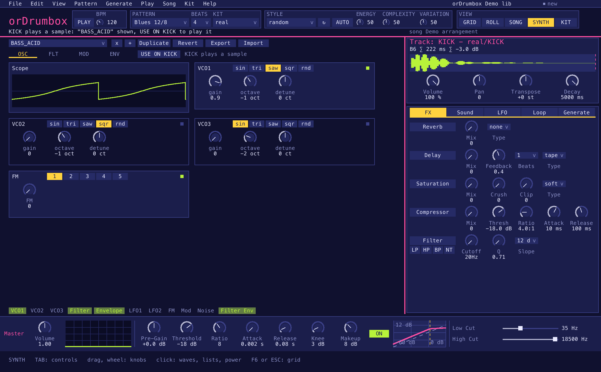
Preset bar
| Control | What it does |
|---|---|
| Preset list | Pick another preset. |
| x | Delete the preset (confirmed). |
| + | Create a new preset. |
| Duplicate | Duplicate the preset. |
| Revert | Back to the preset as it was when opened. |
| Export | Write ordrumbox-synth-sounds.json to a folder you pick. |
| Import | Read presets from a file. |
| USE ON <track> | Shown when the track editor's track plays something else (a sample, another preset): puts the preset shown on it. Beside it, what the track plays. |
The built-in presets include one per base sound of the kits: KICK_SYNTH, SNARE_SYNTH,
TOM_SYNTH, CLAP_SYNTH, COWBELL_SYNTH, CHH_SYNTH, OHH_SYNTH,
CRASH_SYNTH. Auto-assign plays them on a track whose instrument the kit lacks.
Cards
Four tabs of cards. Each card has a power button; touching a control of a card that is off switches it on (an oscillator to 0.5, FM to 0.3, the noise to 0.15, an LFO onto the filter, the mod envelope onto the filter). A knob an LFO moves is purple and follows it. The pills under the cards show the modules in use.
OSC tab
| Card | Control | Range | What it does |
|---|---|---|---|
| Scope | — | Four cycles of the oscillators, with FM, sub and drive. | |
| VCO1, VCO2, VCO3 | wave | sin, tri, saw, sqr, rnd | Waveform. |
| gain | 0–1 | Level (VCO1 at 1, the others at 0 by default). | |
| octave | −4 to +4 | Octave offset. | |
| detune | −100 to +100 cents | Fine tuning. | |
| FM | FM | 0–1 | Modulation depth, following the note. |
| Algo | buttons 1–5 | Routing, below. |
| Algo | Routing |
|---|---|
| 1 | VCO2 → VCO1 |
| 2 | VCO3 → VCO1 |
| 3 | VCO2 → VCO1 and VCO3 → VCO2 |
| 4 | VCO2 + VCO3 → VCO1 |
| 5 | VCO2 → VCO1 and VCO1 → VCO2 (cross) |
FLT tab
| Card | Control | Range | What it does |
|---|---|---|---|
| Flt | type | LP, HP, BP, NT | Filter type; the card draws its response curve. |
| freq | 20 Hz – 20 kHz (default 400) | Cutoff. | |
| Q | 0.1–24 | Resonance. | |
| drive | 0–1 | Saturation into the filter. | |
| slope | 12 dB, 24 dB | Per octave. | |
| FltEnv | Env | 0–1 | How far the envelope opens the filter. |
| ModEnv | attack, decay, sustain, release | 0–0.5 s, 0–1 s, 0–1, 0–0.5 s | A second envelope. |
| target | Off, Filter, Pitch, FM, Shape | What it modulates. |
MOD tab
| Card | Control | Range | What it does |
|---|---|---|---|
| LFO1, lfo2 | target | off, or any synth control | What the LFO moves. |
| wave | sin, tri, saw, sqr, rnd | Waveform. The triangle stays between the LFO's ends, starting at the lower one, like the sine. | |
| freq | 0.01–5 Hz | Rate (when not synced). | |
| depth | 0–1 | Amount. | |
| sync | free, 1/1, 1/2, 1/4, 1/8, 1/16, 1/8T, 1/16T | Lock the rate to the tempo (T = triplet). | |
| noise | mix | 0–1 | White noise level. |
| filterType | LP, HP, BP, NT | The noise's filter (default highpass). | |
| filterFreq | 20 Hz – 20 kHz | Its cutoff. | |
| filterQ | 0.1–24 | Its resonance. |
ENV tab
| Card | Control | Range | What it does |
|---|---|---|---|
| Master | masterVolume | 0–1 (default 0.8) | Preset level. |
| subGain | 0–1 | Sub-oscillator, an octave below VCO1. | |
| pitchPunch | 0–1 | A pitch drop at the start of the note (up to two octaves): kicks and toms. | |
| Env | attack, decay, sustain, release | 0–0.5 s, 0–1 s, 0–1, 0–0.5 s | The amplitude envelope, drawn with its shape. |
13. Kit editor
Ctrl+K. Shows the current kit (its name, the folder its samples are read from, its title and notes), a table of its samples, and the selected sample's details.
Kits are saved to kits.json; new sample audio to samples/. Kit edits are not undo steps.
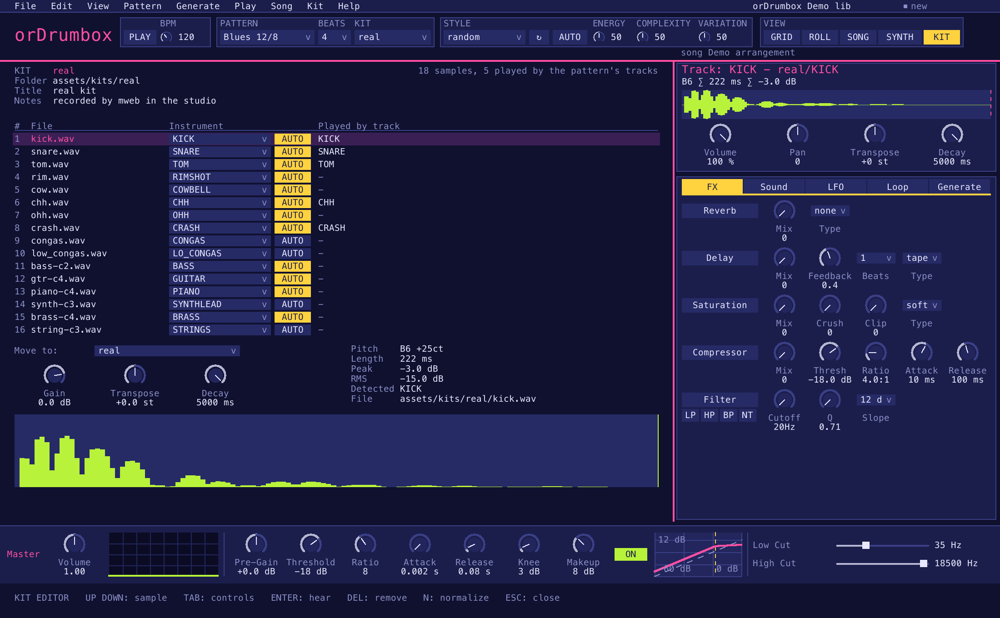
| Control | Range | What it does |
|---|---|---|
| Folder | Where the kit's samples are read from (the user's samples folder or the assets'); when they are in several folders, the one most are in. | |
| Title, Notes | The kit's title and description: a click edits them, in a box that opens at the mouse; saved in kits.json (info, desc). | |
| Sample table | Number, file name, instrument, played by track (↑ ↓ or a click to select). | |
| Played by track | The tracks (rows of the grid: KICK, SNARE…) of the pattern shown that play the sample; "-" when none does. Another pattern may play it on other tracks, or not at all. The header counts the samples the pattern's tracks play. | |
| Instrument | all instruments | In each row: what the sample is (KICK, SNARE…), used by auto-assign. A click opens the instrument categories, then a category's instruments, as Rename track does. |
| AUTO | In each row, after the instrument: the instrument guessed from the sample's file name (kick_01.wav: KICK), as when a folder is imported. A name that gives none leaves the instrument as it is, with a message. The button is lit while the instrument is the one the name gives. | |
| Move to: | all kits | Move the selected sample to another kit. |
| Gain | −24 to +6 dB | Level trim. |
| Transpose | −12 to +12 st | Tuning. |
| Decay | 20–5000 ms | Decay; the end shows on the envelope. |
| Pitch … File | Detected pitch, length, peak and RMS levels, the instrument its name suggests, its full path; the envelope under them. |
| Key / action | What it does |
|---|---|
| Enter | Hear the sample. |
| Delete | Remove it from the kit (confirmed). |
| N | Normalize the kit to 0 dB. |
| E | Export the kit mapping (.json). |
Drop a .wav | It joins the kit (Shift: replaces the selected sample). |
| Drop a folder | It becomes a kit (see Files). |
Drop a .json mapping | The kit is loaded. |
While the kit editor is open, Q–P still play tracks, except E and R (tracks 3 and 4), which are kept for the kit editor. Built-in kits: real, matt, electro, open, ropen, generated, human, 8bits, delagrange, vintage, punchy.
14. Master strip
The strip along the bottom (View › Master shows or folds it): the master bus, in one row.
Settings play at once and are saved to settings.json; they are not undo steps. The plugin has no
master strip: the host mixes.
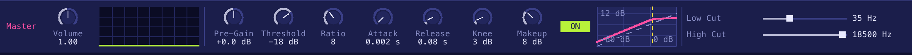
| Group | Control | Range | Default | What it does |
|---|---|---|---|---|
| Volume | Volume | 0–2 | 1 | Master volume. |
| Spectrum | The spectrum of what plays (−100 to −30 dB). | |||
| Compressor | Pre-Gain | −20 to +20 dB | 0 | Gain before the compressor. |
| Threshold | −60 to 0 dB | −18 | Where compression starts. | |
| Ratio | 1–20 | 8 | How hard it compresses. | |
| Attack | 0.001–1 s | 0.002 | How fast it reacts. | |
| Release | 0.01–1 s | 0.08 | How fast it lets go. | |
| Knee | 0–40 dB | 3 | Softness of the curve. | |
| Makeup | 0–24 dB | 8 | Gain after compression. | |
| On / off button | Compressor on, or bypassed (BYPASSED over the curve). | |||
| Transfer curve | Output level against input level, with the threshold marked. | |||
| Filters | Low Cut | 10–500 Hz | 35 | Removes the lowest frequencies. |
| High Cut | 1–22 kHz | 18 500 | Removes the highest frequencies. |
15. Generation, styles and auto mode
Three levels
- The header: STYLE, ↻, AUTO and the ENERGY / COMPLEXITY / VARIATION knobs act on the whole pattern.
- The Generate tab of a track: Auto, Lock, a new line for the track alone, and its main settings.
- Advanced in the Generate tab: the Manual, Groove, Engine and full Compose settings.
D and S (and Generate › Chords (auto)) make the drum, bass or chord lines alone, in auto mode. Shift+B makes a new pattern in the chosen style.
Styles
Fourteen styles: techno, house, drum & bass, hip-hop, rock, funk, disco, reggae, swing jazz, bossa nova, samba, salsa, afrobeat, trap (with aliases such as rap, dnb, ragga). A style sets the meter (jazz and afrobeat are ternary; bossa and salsa run over two measures for their clave), the tempo, the swing, the tracks, the bass and chord variants and progression, a fill, and for each drum part where hits are typical, required or forbidden, the accents, hits per measure, complexity, syncopation, coupling to another part, variation, ghost notes and rolls.
Learned styles
Tag patterns with a style's name (or alias) and the style moves toward what they play — each part's weights and hits, the required steps, the swing — in proportion to the measures seen. A tag that names no style becomes a style of its own. Fewer than 4 measures teach nothing. The STYLE list shows them.
Auto mode
A track in auto mode (its name in violet; the Generate tab's Auto or Generate › Track in auto mode toggles it) follows the song form as it plays — intro, verse, chorus, break…: a new line at the start of each section (the drums thinner in quiet sections); a drum line then moves a few hits from loop to loop and the style's fill fills its last loop; bass and chord lines hold through the section. These lines are saved but are not undo steps. Exports regenerate them on their own copy. X puts random notes on the focused track.
16. Files: save, import, export, back up
Exports
| What | Command | Format |
|---|---|---|
| Pattern as JSON | Ctrl+Shift+S | ordrumbox-<name>.json |
| Pattern as MIDI | Ctrl+M | Type 1, 96 PPQN; drums on channel 10 at their GM keys, melodic instruments on their own channels at the sample's root note. |
| Pattern as WAV | Ctrl+E | 16-bit, 44.1 kHz, the pattern once, no tail. |
| Song as WAV | Ctrl+Shift+E | The whole selected arrangement. |
| Song file | File › Save song / Save song as / Export song | .odbox |
| Library | File › Export library | ordrumbox-library.json, synth presets included |
| Kit mapping | File › Export kit mapping, or E in the kit editor | .json |
| Kit with its samples | File › Export kit with its samples | A folder named after the kit: kit.json (each sample's path the name of its file there) and the WAV files |
| Synth presets | Synth editor › Export | ordrumbox-synth-sounds.json |
Every export asks for its folder: the last one picked, at first exports/ in the user data folder if it
exists, else the home folder. Enter on [ Use this folder ] writes there. A file of the same name is
replaced only once confirmed; a folder export never writes into a folder already there.
Imports and drag & drop
| Drop on the window / command | Result |
|---|---|
.mid file, Ctrl+O, or a .mid given on the command line | New 32-beat patterns (up to 16), one track per instrument found (by GM program, drum key, then track name; a second track of one instrument is numbered: PERC 2), in one undo step. The file's tempo is not read (the session's stays). |
.odbox file, File › Import song | The song replaces the library (confirmed). |
| File › Import library | A library file replaces the library (confirmed, one undo step); its synth presets replace those of the same name. |
.wav file, File › Add sample | Joins the current kit (Shift while dropping: replaces the kit editor's selected sample). |
| Folder, Kit › Import folder as kit | A folder with a kit.json (made by Export kit with its samples) is read back: its samples are copied to samples/imported/<kit>/ and the kit replaces the kit of its name. A folder of WAV files without one becomes a new kit, each sample's instrument guessed from its name. |
.json kit mapping, File › Load kit mapping | The kit is loaded. |
Backups and the user data folder
- File › Back up user data... copies all your work (the library with its synth presets,
kits.json,settings.json,samples/,songs/) to a folderorDrumbox-backup-<date>-<time>(UTC) you place. - File › Restore user data... puts such a folder back. The files there are first moved to
backups/, so nothing is lost; the app then loads again as at start. - File › Change user data folder... and Use the default user data folder... switch folders; Open user data folder shows it in the system's file manager.
File picker
Commands ending in "..." open the built-in file picker. ↑ ↓, Page Up/Page Down, Home/End or the wheel move; a letter jumps; Enter (or a second click) opens a folder or chooses; Backspace goes to the parent folder; Esc cancels. It lists only the files the command takes; on Windows the drives are listed above a drive's root. It starts in the home folder, then where it last chose.
17. Keyboard shortcuts
Keys are the ones the keyboard's layout marks (Ctrl+Z is the key marked Z on AZERTY too), except the two rows that play, read by their place: 1–9 (mute, Shift: solo) and Q–P (hear a track), which on AZERTY start at & and A. On macOS, Cmd works for Ctrl. In the plugin, Alt stands for Ctrl (section 19). F1 lists every key.
Play
| Key | Action |
|---|---|
| Space | Play / stop the pattern (Shift, or in the song panel: the song, from its cursor) |
| Home, keypad Enter | Back to the first beat or measure. A song stopped keeps its place: Space goes on from there. |
| Shift+click on the song ruler | Loop the song from the cursor's measure to the one clicked (Play > Clear the loop ends it). |
| F9 F8 | Metronome on / off; tap the tempo. |
| Ctrl+R | Record: while the pattern plays, Q–P also put a note on the step that plays. With Play › Record off the grid on, the note keeps how early or late it was played, as its Shift. |
| Ctrl+, | Preferences: sound output, MIDI input (a keyboard or pad plays the tracks, and is recorded with Ctrl+R), metronome, VU meters, toasts. |
| F11, Ctrl+W | Full screen; close the window. |
| [ ] | Previous / next pattern (Shift: arrangement; also Page Up Page Down) |
| - = | Tempo −1 / +1 (Shift: ×10) |
| , . | Previous / next kit |
| 1–9 | Mute track 1–9 (Shift: solo), in every view |
| Q–P | Hear track 1–10, in every view |
Edit
| Key | Action |
|---|---|
| Arrows | Move the grid cursor |
| Enter / click | Switch the step on or off (Shift+click: select its note) |
| Shift+↑↓ / ←→ | Velocity ±0.05 / pitch ±1 of the selected note |
| L | Accent the cursor step, or take the accent off |
| Delete | Clear the cursor step |
| Esc | Deselect |
| Ctrl+Z, Ctrl+Y (or Ctrl+Shift+Z) | Undo, redo (50 steps) |
| Ctrl+C / V | Copy / paste the cursor step (Shift: the track) |
| Ctrl+T, Ctrl+Backspace | Add a KICK track, remove the focused track |
| Ctrl+G, Ctrl+L | Next grid (steps per beat), loop one step shorter |
| Ctrl+- = | Pattern length −1 / +1 beat |
| Ctrl+N, Ctrl+D | New pattern, duplicate pattern |
Sounds and generation
| Key | Action |
|---|---|
| B | Make the pattern again in its style |
| Shift+B | A new pattern in the chosen style |
| D, S | Drums, bass: generate in auto mode / auto mode off |
| X | Random notes on the focused track |
| F, Shift+G | A random pattern, a random kit |
| Shift+H | Every track on its matching synth preset |
| Shift+J | Every track back on auto-assign |
| Shift+K | A random sample (of any kit) on every track |
| V | VU meters on / off |
| C | Next colour scheme |
Files and windows
| Key | Action |
|---|---|
| Ctrl+S | Save the library now (Shift: export the pattern as JSON) |
| Ctrl+E | Export the pattern to WAV (Shift: the song) |
| Ctrl+M | Export the pattern to MIDI |
| Ctrl+O | Import a MIDI file |
| Ctrl+K | Kit editor open / close |
| Ctrl++, Ctrl+Shift+-, Ctrl+0 | Zoom in, zoom out, the display's size |
| Ctrl+Q | Save and quit |
| F10, Alt | Open the menus |
| F1 | The list of keys |
| F2 | Track editor shown / folded |
| F3 | Song panel |
| F4 | Piano roll |
| F5 | Grid |
| F6 | Synth editor |
| F7 | Note editor shown / folded |
| Tab, Shift+Tab | Focus the next / previous control of the editors |
18. Audio signal flow
Each track
Sample or synth voice → Filter → Compressor → Saturation → Bitcrusher → Hard clip → Reverb → Delay → Volume → Pan → Mix bus
Master bus
Mix bus → Pre-gain → Compressor → Low cut → High cut → Volume → Soft limit → Output (and spectrum)
The soft limit leaves the signal unchanged under 0.9 and rounds it toward ±1 above, so loud mixes do not clip harshly. In the plugin, a track sent to its own output (section 19) leaves the mix bus after its pan: the master acts on the mix only.
19. The plugin (CLAP / VST3)
orDrumbox also runs as an instrument in a DAW: copy orDrumbox.clap or orDrumbox.vst3 to the host's
plugin folder. Its window is the app's, without what the host does.
What differs from the app
- Transport and tempo are the host's. In place of PLAY, HOST shows whether the host plays (a triangle) or is stopped (a square), and the tempo played. A host tempo outside 20–300 BPM plays at the nearest bound, and the status line says so. Playback starts on the host's first block. An offline render (a bounce) plays as in real time, every note in its place.
- The library is saved in the host's project: each project has its own, synth presets included.
- The menus leave out what the host or the app does: save, quit, play, tempo, songs, the user data folder, updates, factory reset, the master strip.
- Keys: Space and every Ctrl/Cmd key are the host's. orDrumbox's Ctrl keys take Alt instead (Alt+Z undo, Alt+K kit editor…); the menus show them.
- The window opens compact, the grid alone (1072×388 at scale 1), to leave the host's arrangement in view. F2 shows or folds the track editor, F7 the note editor, and the window grows or shrinks with them. The grip in its bottom-right corner resizes it (down to 320×200); the project keeps the size.
Automatable parameters
| Parameter | What it does |
|---|---|
| Pattern, Kit | The pattern and the kit played, by number from 1. |
| Volume | Master volume, −60 to +6 dB. |
| Swing | 50 % (straight) to 75 %: where the second step of each pair starts, on every track with an even number of steps per beat, on top of the track's own swing. |
| For tracks 1–16: Mute, Volume, Pan | A gain on the track's own volume (−60 to +6 dB), a pan added to its own. |
| Cutoff, Q | Moves the filter's cutoff by up to ±4 octaves; adds to its Q. |
| Reverb, Delay, Saturation, Compressor | Added to the effect's amount, kept within 0 to 1; with the effect's button off, the track's amount counts as 0. |
| Threshold, Feedback | dB added to the compressor's threshold (kept within −60 to 0); added to the delay's feedback (up to 0.95; a slap keeps its single echo). |
| Transpose | ±24 semitones on the notes played, MIDI input included. |
| Output | Mix or Own: see below. |
At their defaults they change nothing. They change what plays, not the library. A filter off, and a reverb or delay of type none, stay off.
Outputs
17 stereo outputs: Mix, and Track 1 to Track 16. Every track plays in the mix until its Output parameter is set to Own: it then leaves the mix and plays on its own output, with its own volume, pan, filter and effects, for the host to mix and process apart. An output with no track on it is silent. A host that gives the plugin a single stereo output keeps every track in the mix; tracks past the 16th always are.
MIDI
MIDI goes both ways, one place per track of the pattern playing. A drum track is on channel 10 at its instrument's GM key (KICK 36, SNARE 38…). Any other track (melodic, unknown name, a second track of one drum) has a channel of its own (1–9, 11–16, in track order), its notes on the key of their pitch (the track's pitch 0 is its sample's root note, C3 = 48 without one and for a synth). Past the 15 channels, the tracks left take keys of channel 10 from 84 up.
- In: a note on a track's channel plays that track at the note's pitch; a note on any other channel plays the drum track with that key, at its velocity, whether the host plays or not.
- Out: the notes the pattern plays go out where they come in, with their pitch, as long as the note (a step of its track unless its Length says otherwise). Tracks the host mutes send nothing. A clip recorded from this output and played back into the plugin plays the same tracks at the same pitches.
20. AI clients (MCP)
Any MCP client (Claude Desktop, Claude Code, OpenCode, Antigravity, Cursor…) can drive the running app. The client starts ordrumbox --mcp,
which passes each tool call to the open window: the edit shows at once, is one step of Edit › Undo, and is saved
with the library. The window listens on 127.0.0.1 only, with a token written to mcp.json. With the window
closed, a call answers that orDrumbox is not running. While a confirmation is open in the window, the tools are refused.
The link is the app's: the plugin does not offer it.
In the client's settings (use the program's path; ordrumbox.exe on Windows):
{ "mcpServers": { "ordrumbox": { "command": "/path/to/ordrumbox", "args": ["--mcp"] } } }
The tools cover patterns (list, create, select, rename, duplicate, remove, notes, tracks, tempo, length, tags, description), arrangements and clips, song files, kits and samples, synth presets, the master bus, exports (WAV, MIDI, JSON), MIDI import, play, stop, undo and redo, and the playback state. The client writes the notes itself; orDrumbox's automatic generation (generate, regenerate, auto mode, macros, random notes) is used only when you ask for it in words.
New to this? The beginner's guide to the AI link walks through the setup and worked examples.
21. Updates, About, factory reset
Updates
At start, at most once a day, the app asks GitHub whether a newer release exists (with the system's curl; the request
carries only the program's name and version). A newer one is shown on the status line and Help › Download orDrumbox …
opens its page. Nothing is downloaded or installed by the app. Help › Check for updates checks now. To stop the check
at start, set "check": false under updates in settings.json. The plugin does not check.
About
Help › About orDrumbox shows the build (also in the window title and with ordrumbox --version) and the
paths in use: the library file, the user data folder (and whether it was chosen in the app), the exports folder and the assets.
A release is named by its version alone (0.1.1); other builds add dev, the commit and its date.
Help › User manual... opens this manual on the web site.
Factory reset
Help › Factory reset... moves your files to backups/ in the user data folder — library.json,
kits.json, settings.json, synth_presets.json, samples/, songs/ — and reloads
everything from the assets, as at first start. File › Restore user data brings them back. ← → choose between
Keep and Reset, Enter runs the chosen one, Esc cancels; a click on a button takes it,
a click elsewhere cancels.